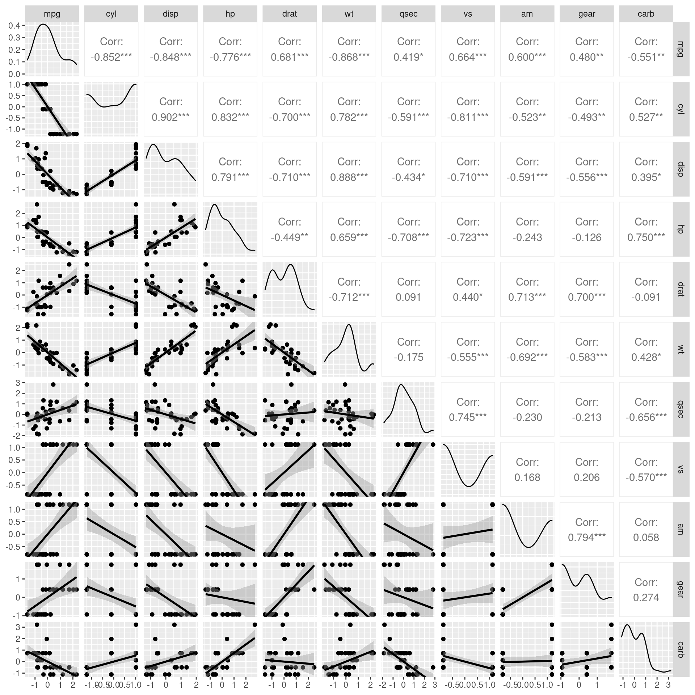
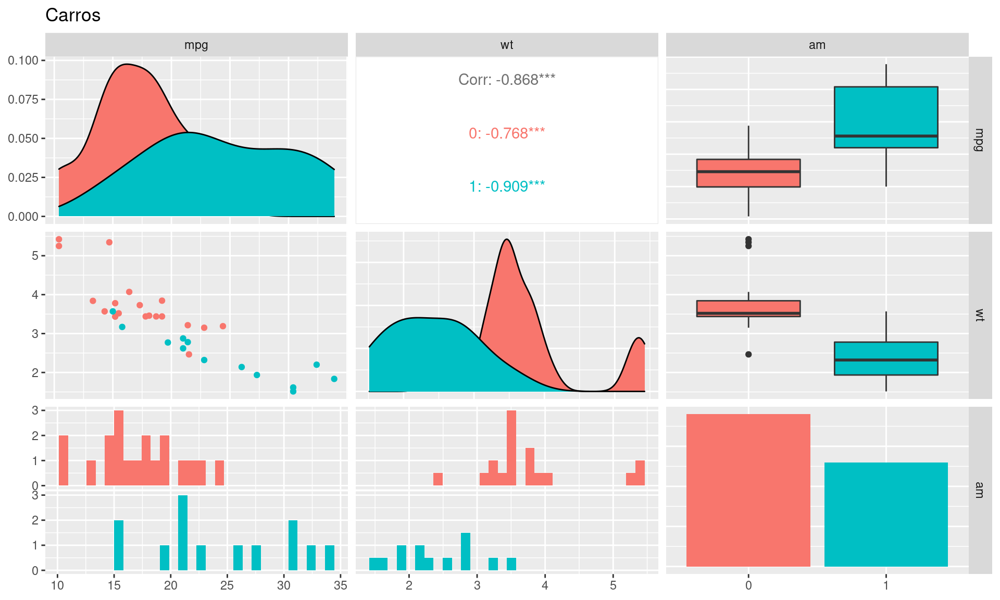
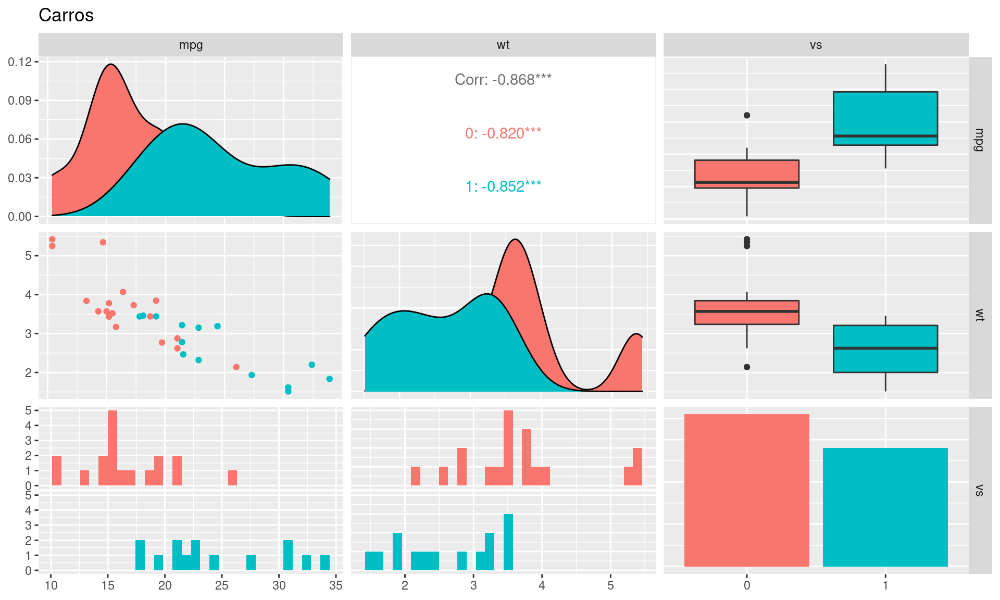

Os dados utilizados nesse estudo foram extraídos da revista Motor Trend US de 1974 e abrangem o consumo de combustível e 10 aspectos do design e desempenho de automóveis para 32 automóveis (modelos de 1973 a 1974). Nossa base contém 32 observações (linhas) de 11 variáveis numéricas (colunas). São elas:
1. mpg: consumo de combustível em milhas por galão;
2. cyl: número de cilindros;
3. disp: deslocamento;
4. hp: potência bruta;
5. drat: relação do eixo traseiro;
6. wt: Peso (1000 libras);
7. qsec: 1/4 de milha;
8. vs: Motor (0 = em forma de V, 1 = reto);
9. am: Transmissão (0 = automático, 1 = manual);
10. gear: Número de marchas (para frente);
11. carb: número de carburadores.
Pretendemos com esse estudo identificar quais características do carro explicam sua eficiência (mpg) analisando o comportamento de cada variável e construindo então um modelo linear que possa quantificar quantas e quais são essas variáveis.
mpg cyl disp hp
Min. :10.40 Min. :4.000 Min. : 71.1 Min. : 52.0
1st Qu.:15.43 1st Qu.:4.000 1st Qu.:120.8 1st Qu.: 96.5
Median :19.20 Median :6.000 Median :196.3 Median :123.0
Mean :20.09 Mean :6.188 Mean :230.7 Mean :146.7
3rd Qu.:22.80 3rd Qu.:8.000 3rd Qu.:326.0 3rd Qu.:180.0
Max. :33.90 Max. :8.000 Max. :472.0 Max. :335.0
drat wt qsec gear
Min. :2.760 Min. :1.513 Min. :14.50 Min. :3.000
1st Qu.:3.080 1st Qu.:2.581 1st Qu.:16.89 1st Qu.:3.000
Median :3.695 Median :3.325 Median :17.71 Median :4.000
Mean :3.597 Mean :3.217 Mean :17.85 Mean :3.688
3rd Qu.:3.920 3rd Qu.:3.610 3rd Qu.:18.90 3rd Qu.:4.000
Max. :4.930 Max. :5.424 Max. :22.90 Max. :5.000
carb
Min. :1.000
1st Qu.:2.000
Median :2.000
Mean :2.812
3rd Qu.:4.000
Max. :8.000 Não há dados faltantes em nossa base. Com relação as informações acima, destaca-se:
1. Temos carros entre 4 e 8 cilindros;
2. Temos carros com o número de marchas entre 3 e 5;
3. Temos também carros com carburadores variando entre 1 e 8;
4. Em relação a variável wt que, por hipóstese, consideramos significativa para explicar a eficiência do veículo, podemos notar que os pesos variam de 1.513 até 5.424, tendo a média e a mediana com valores próximos (3.217 e 3.352, respectivamente).
5. Em todas as variáveis podemos perceber uma relativa proximidade entre a média e a mediana, o que pode ser uma indício de baixa dispersão em nossos dados.
Vamos analisar o comportamento de cada uma dessas variáveis, duas a duas:
library(corrplot)
library(GGally)
df_correlacao = data.frame(scale(mtcars))
corrplot.mixed(cor(df_correlacao), order="hclust", tl.col="black")

Com os dados normalizados podemos percerber que a variável mpg se correlaciona com todas as outras (algumas de forma positiva e forte, como por exemplo drat e vs e outras negativamente, como disp, cyl e wt). Porém, algumas dessas variáveis também se correlacionam entre si de forma considerável, o que pode ser um problema na construção de um possível modelo linear múltiplo.
A variável vs apresenta informações sobre o formato do motor, podendo o mesmo ser em formato “v” ou “reto”, enquanto am nos informa se temos um veículo automático ou mecânico. Vamos olhar separadamente para cada uma delas.

Na análise de correlação, wt foi a variável que apresentou maior correlação negativa com mpg. Quando separamos os carros em dois grupos através de am (automáticos ou não) podemos perceber que que existe uma certa divisão em relação a cada um desses grupos, o que pode ser um indício de ganho com essa possível interação na construção do modelo.
De forma análoga vamos analisar a variável vs:

A separação dos dados considerando-se os dois tipos de motores também pode ser um ganho na construção do nosso modelo.
Nossa modelagem terá variável resposta mpg. Para tentar explicar tal variável através de um modelo linear, analisaremos quais as variáveis que apresentam melhor desempenho e seu impacto nessa explicação. Com os dados normalizados, nossa primeira tentativa consiste na construção de um modelo que leva em consideração todas as outras variáveis para essa explicação.
#normalizando
df_cars_norm = data.frame(scale(mtcars))
#modelando
model_cars = lm(mpg~., df_cars_norm)
summary(model_cars)
Call:
lm(formula = mpg ~ ., data = df_cars_norm)
Residuals:
Min 1Q Median 3Q Max
-0.57254 -0.26620 -0.01985 0.20230 0.76773
Coefficients:
Estimate Std. Error t value Pr(>|t|)
(Intercept) -1.613e-17 7.773e-02 0.000 1.0000
cyl -3.302e-02 3.097e-01 -0.107 0.9161
disp 2.742e-01 3.672e-01 0.747 0.4635
hp -2.444e-01 2.476e-01 -0.987 0.3350
drat 6.983e-02 1.451e-01 0.481 0.6353
wt -6.032e-01 3.076e-01 -1.961 0.0633 .
qsec 2.434e-01 2.167e-01 1.123 0.2739
vs 2.657e-02 1.760e-01 0.151 0.8814
am 2.087e-01 1.703e-01 1.225 0.2340
gear 8.023e-02 1.828e-01 0.439 0.6652
carb -5.344e-02 2.221e-01 -0.241 0.8122
---
Signif. codes: 0 '***' 0.001 '**' 0.01 '*' 0.05 '.' 0.1 ' ' 1
Residual standard error: 0.4397 on 21 degrees of freedom
Multiple R-squared: 0.869, Adjusted R-squared: 0.8066
F-statistic: 13.93 on 10 and 21 DF, p-value: 3.793e-07O primeiro modelo tendo como preditoras todas as demais variáveis apresentou valores não significativos para cada uma delas. O comando summary nos permite concluir a partir do teste de hipótese (olhando para o p-valor) que, juntas, elas não tem poder de explicação. Provelmente isso se deve ao fato de existirem muitas variáveis correlacionadas entre si, quando olhamos para as variáveis preditoras.
Voltando para a análise de correlação, observa-se que mpg tem forte correlação positiva com vs, drat, am, gear e que essas variáveis, entre si, não se correlaciona tão bem assim. Vamos para um novo teste de modelagem.
Call:
lm(formula = mpg ~ vs + am + gear + drat, data = df_cars_norm)
Residuals:
Min 1Q Median 3Q Max
-1.0859 -0.4173 0.0132 0.3340 0.9418
Coefficients:
Estimate Std. Error t value Pr(>|t|)
(Intercept) 9.126e-17 1.024e-01 0.000 1.000000
vs 5.181e-01 1.191e-01 4.350 0.000174 ***
am 4.889e-01 1.863e-01 2.624 0.014131 *
gear -1.721e-01 1.803e-01 -0.955 0.348251
drat 2.250e-01 1.750e-01 1.286 0.209375
---
Signif. codes: 0 '***' 0.001 '**' 0.01 '*' 0.05 '.' 0.1 ' ' 1
Residual standard error: 0.5791 on 27 degrees of freedom
Multiple R-squared: 0.7079, Adjusted R-squared: 0.6647
F-statistic: 16.36 on 4 and 27 DF, p-value: 6.423e-07Notamos uma representatividade apenas com vs e am no modelo. Apesar do R2 ajustado ter apresentado um valor menor que o do modelo anterior, aqui obtivemos coeficientes mais representativos para essas variáveis. Porém essas duas variáveis apresentam características binárias que, isoladamente, não seriam capazes de explicar o desempenho de um veículo.
Em se tratando de desempenho veicular, estudos mostram que o peso (wt), a quantidade de cilindros (cyl) e a potência bruta (hp) podem ser influenciadores diretos de desempenho. Vamos verificar:
Call:
lm(formula = mpg ~ wt + cyl + hp, data = df_cars_norm)
Residuals:
Min 1Q Median 3Q Max
-0.65191 -0.25880 -0.08813 0.19662 0.97870
Coefficients:
Estimate Std. Error t value Pr(>|t|)
(Intercept) 3.676e-17 7.367e-02 0.000 1.000000
wt -5.141e-01 1.202e-01 -4.276 0.000199 ***
cyl -2.790e-01 1.632e-01 -1.709 0.098480 .
hp -2.052e-01 1.351e-01 -1.519 0.140015
---
Signif. codes: 0 '***' 0.001 '**' 0.01 '*' 0.05 '.' 0.1 ' ' 1
Residual standard error: 0.4167 on 28 degrees of freedom
Multiple R-squared: 0.8431, Adjusted R-squared: 0.8263
F-statistic: 50.17 on 3 and 28 DF, p-value: 2.184e-11Apenas wt apresentou significância. A correlação entre as outras certamente impacta na nossa construção.
Quando olhamos separadamente para am percebemos uma divisão bem definida em relação as duas características dessa variável. Como wt é o fator com maior correlação com nossa variável resposta, vamos construir um modelo com essa interação e analisar as métricas.
Call:
lm(formula = mpg ~ wt * am, data = df_interacao)
Residuals:
Min 1Q Median 3Q Max
-0.59738 -0.25628 -0.08836 0.14953 1.01061
Coefficients:
Estimate Std. Error t value Pr(>|t|)
(Intercept) -0.1418 0.1221 -1.162 0.25509
wt -0.6146 0.1275 -4.819 4.55e-05 ***
ammanual -0.3597 0.2354 -1.528 0.13779
wt:ammanual -0.8602 0.2345 -3.667 0.00102 **
---
Signif. codes: 0 '***' 0.001 '**' 0.01 '*' 0.05 '.' 0.1 ' ' 1
Residual standard error: 0.4299 on 28 degrees of freedom
Multiple R-squared: 0.833, Adjusted R-squared: 0.8151
F-statistic: 46.57 on 3 and 28 DF, p-value: 5.209e-11Nessa situação podemos notar que o coeficiente ammanual não possui significância para o modelo e o R2 ajustado apresenta resultado siginificativo (0.8151).
De forma análoga, vamos promover a interação de wt com a variável vs:
Call:
lm(formula = mpg ~ wt * vs, data = df_interacao_2)
Residuals:
Min 1Q Median 3Q Max
-0.6629 -0.2967 -0.0568 0.2146 0.8638
Coefficients:
Estimate Std. Error t value Pr(>|t|)
(Intercept) 0.09651 0.15222 0.634 0.5312
wt -1.04081 0.16232 -6.412 6.08e-07 ***
vsv -0.39911 0.19041 -2.096 0.0452 *
wt:vsv 0.47238 0.19736 2.393 0.0236 *
---
Signif. codes: 0 '***' 0.001 '**' 0.01 '*' 0.05 '.' 0.1 ' ' 1
Residual standard error: 0.4277 on 28 degrees of freedom
Multiple R-squared: 0.8348, Adjusted R-squared: 0.8171
F-statistic: 47.16 on 3 and 28 DF, p-value: 4.497e-11Percebe-se que todos os coeficientes tem significância para o modelo e que o mesmo apresentou um bom valor do R2 ajustado (0,8171).
Com base nos testes realizados e nas métricas avaliadas, o model_cars5, que foi o último modelo construído e que leva em consideração a interação de vs com wt para uma possível explicação de mpg, foi o que apresentou melhor desempenho até agora. Continuaremos nossas análises com o diagnóstico residual desse modelo.
shapiro.test(model_cars5$residuals)
Shapiro-Wilk normality test
data: model_cars5$residuals
W = 0.95567, p-value = 0.2084Podemos perceber uma distribuição aleatória dos resíduos com alguns pontos no gráfico Normal Q-Q que podem indicar uma não normalidade dos resíduos, porém o teste de normalidade nos mostra que não devemos rejeitar a hipótese de que essa distribuição é normal. Vamos verificar uma possível presença de outliers para buscar um melhor ajuste.
Em relação a variável mpg podemos notar a presença de um outlier em motores do tipo v. Vamos substituir esse valor pela média e analisar o comportamento do nosso modelo.
Call:
lm(formula = mpg ~ wt * vs, data = df_interacao_2)
Residuals:
Min 1Q Median 3Q Max
-0.6629 -0.2656 -0.1185 0.2787 0.8638
Coefficients:
Estimate Std. Error t value Pr(>|t|)
(Intercept) 0.09651 0.14386 0.671 0.50781
wt -1.04081 0.15341 -6.784 2.28e-07 ***
vsv -0.50509 0.17996 -2.807 0.00901 **
wt:vsv 0.57931 0.18653 3.106 0.00432 **
---
Signif. codes: 0 '***' 0.001 '**' 0.01 '*' 0.05 '.' 0.1 ' ' 1
Residual standard error: 0.4042 on 28 degrees of freedom
Multiple R-squared: 0.8476, Adjusted R-squared: 0.8312
F-statistic: 51.89 on 3 and 28 DF, p-value: 1.469e-11shapiro.test(novo_model_car$residuals)
Shapiro-Wilk normality test
data: novo_model_car$residuals
W = 0.95634, p-value = 0.2176Após o tratamento desse ponto, notamos que houve uma melhora em relação ao R2 ajustado e em relação aos resíduos, podemos perceber um ajuste mais suave e uma melhor distribuição.
Graficamente:
library(plotly)
plot_final = df_interacao_2 %>%
ggplot(aes(x = wt, y = mpg)) +
geom_point(aes(colour = vs)) +
geom_smooth(method = "lm", se = FALSE, colour = "black")+
geom_abline(intercept = 0.09651, slope = -1.04081, colour = "red") + # reto
geom_abline(intercept = 0.09651-0.50509 , slope = -1.04081+0.57931 , colour = "green")+ # v
theme(legend.position = "bottom")
ggplotly(plot_final)
Todas as variáveis analisadas possuem correlação com a nossa variável resposta, ou seja, o desempenho veicular poderia ser explicado de inúmeras formas. Após alguns testes com essas variáveis foi possível perceber que o peso (wt) era a variável que melhor se comportava nessa explicação e que, quando combinada com outras variáveis acabava tendo um desempenho inferior. Porém o formato do motor (vs) quando combinado com o peso (wt) apresentava uma ganho nas métricas do nosso modelo.
Assim o modelo final leva em consideração a interação entre as variáveis wt e vs, apresentando coeficentes significantes para ambas, e melhores métricas conforme verificado em nossos testes de hipóteses através do comando summary. Segue os detalhes do nosso modelo final:
modelo_final = novo_model_car
summary(modelo_final)
Call:
lm(formula = mpg ~ wt * vs, data = df_interacao_2)
Residuals:
Min 1Q Median 3Q Max
-0.6629 -0.2656 -0.1185 0.2787 0.8638
Coefficients:
Estimate Std. Error t value Pr(>|t|)
(Intercept) 0.09651 0.14386 0.671 0.50781
wt -1.04081 0.15341 -6.784 2.28e-07 ***
vsv -0.50509 0.17996 -2.807 0.00901 **
wt:vsv 0.57931 0.18653 3.106 0.00432 **
---
Signif. codes: 0 '***' 0.001 '**' 0.01 '*' 0.05 '.' 0.1 ' ' 1
Residual standard error: 0.4042 on 28 degrees of freedom
Multiple R-squared: 0.8476, Adjusted R-squared: 0.8312
F-statistic: 51.89 on 3 and 28 DF, p-value: 1.469e-11modelo_final$coefficients
(Intercept) wt vsv wt:vsv
0.09651164 -1.04080989 -0.50509226 0.57931189 Como mencionado, nosso modelo final construído com a interação entre wt e vs leva como casela de referência motores do tipo reto e está representado da seguinte forma:
mpg = 0.09651 - 1.0481 beta1 + (0.09651 - 0.50509) + (-1.0481 + 0.57931) beta2.